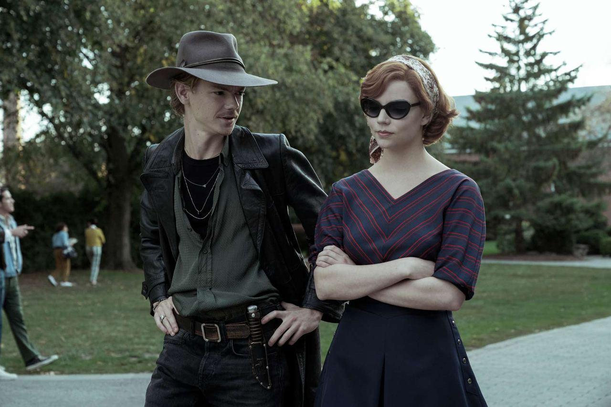

Весна 2021
Весна 2021
Аня Тейлор-Джой оценила шансы на второй сезон сериала «Ход королевы»
Звезда дала развёрнутое интервью популярному журналу.Сейчас Аня Тейлор-Джой — одна из самых популярных молодых актрис. Она стала известной благодаря сериалу «Ход королевы»

Сейчас Аня Тейлор-Джой — одна из самых популярных молодых актрис. Она стала известной благодаря сериалу «Ход королевы», за который получила «Золотой глобус» в номинации «Лучшая роль в мини-сериале или телефильме». На днях актриса дала интервью журналу Elle, в котором поделилась своими мыслями относительного второго сезона многосерийного фильма. Она не исключает, что есть возможность его появления. «Было бы глупо с моей стороны сказать: «Второй серии никогда не будет», а потом мне будет 40, и Скотт скажет: «Эй, как ты к этому относишься? Ты хочешь вернуться?» — призналась Тейлор-Джой.Также знаменитость поделилась тем, что может произойти во втором сезоне сериала с её героиней. «Надеюсь, она начнёт делать всё для собственного удовольствия. Я бы хотела, чтобы Бет забрала Бенни и провела с ним какое-то время в России, просто они вдвоём были снобистскими интеллектуалами, и я надеюсь, что у неё есть фаза Боуи», — отметила Аня.